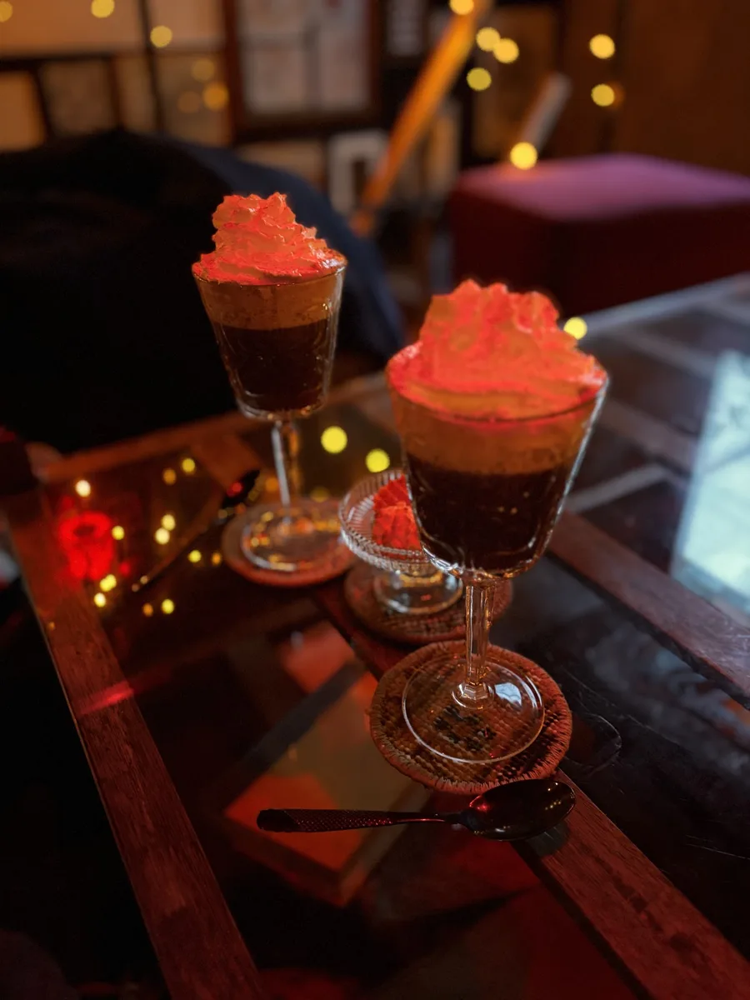
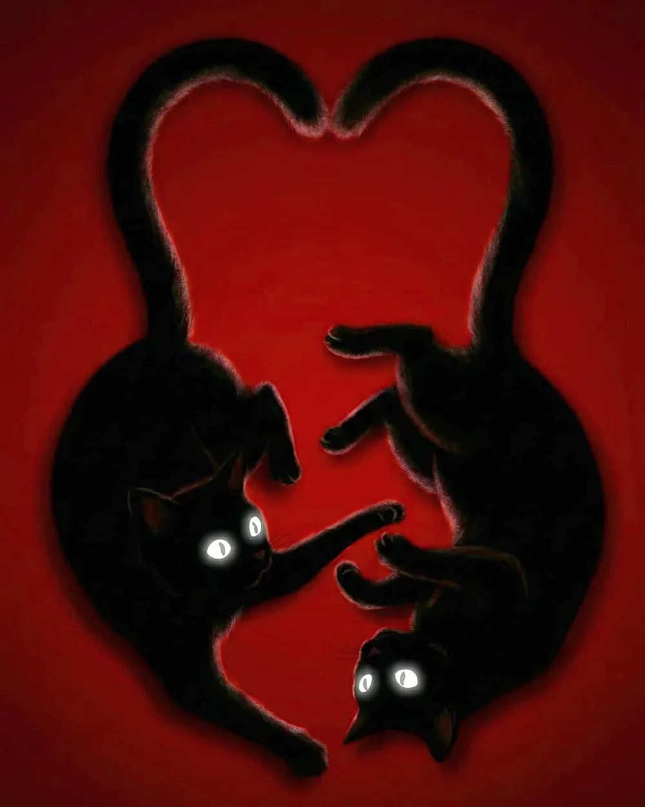
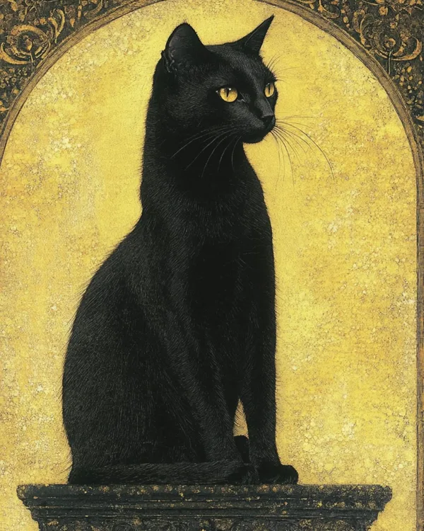
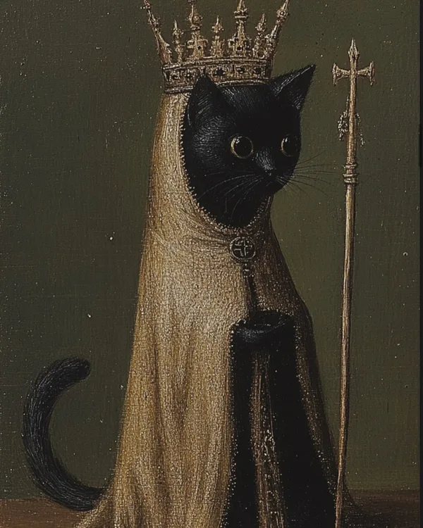
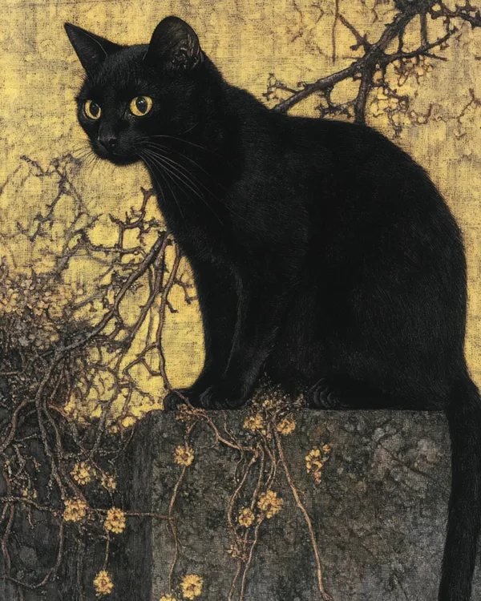

Hier is het altijd een beetje avond
Black Cats begon met een crowdfunding op Ulule. Genoeg mensen geloofden erin, en in maart 2025 ging de deur open in de Geitestraat.
Geen hoek is hetzelfde. Een Chesterfield onder een muur vol prenten, kroonluchters met echte kaarsen, en op de toog houdt een zwarte kat de wacht. Je komt voor een koffie en je blijft voor de sfeer.
More than just a coffee shop. A place where everything and everyone has a story.Zo stond het in de crowdfunding, en zo is het gebleven.


Koffie overdag, koftails als het donker wordt
Overdag een cappuccino, een chai latte of een warme chocomelk. Later op de dag ook een glas wijn, een Mechels biertje of een van onze koftails.

Koffie en warm
- BlackcatcinoHet huisrecept, met latte art
- Cappuccino of latte
- Chai latte
- Warme chocomelk
Koftails
- Catonic€ 6,80
- Black Iced Coconut€ 7,50
Wijn en bier
- Rode, witte of rosé€ 6,00
- Cava€ 8,00
- Gouden Carolus Tripel of Classic€ 6,00
- Maneblusser€ 4,50
- Carlsberg 0.0€ 4,00

Wat er te eten is, wisselt. Vraag gewoon even aan de toog wat er vandaag klaarstaat.

Vrijdag de dertiende is hier een feestdag
Waar anderen liever thuisblijven, gaat bij ons de muziek aan. Dress in black, bring good vibes, and dance your bad luck away. En tussendoor is er bijna altijd wel iets te doen.
- Friday the 13th party dj's in de koffiebar
- Coffee rave dansen met een koffie in de hand
- Saxofoon en slam poetry kleine avonden aan de toog
- Pink is the new black één avond geen zwart
Dertig katten om te verzamelen
Onze eigen postkaarten, elk met een andere zwarte kat. Ze zitten in blinde zakjes van vijf, dus welke je hebt, zie je pas als je het zakje openmaakt. Eentje voor op de koelkast, de rest om op te sturen. Of om te houden, dat snappen we ook.
- In de reeks
- Dertig ontwerpen
- Per zakje
- Vijf kaarten, blind gekozen
- Te koop
- Aan de toog in de Geitestraat
In april 2025 zat er één gouden kaart tussen. Wie ze vond, kreeg een jaar lang elke week een koffie van ons.





Allemaal net wat anders
op Google
Een top sfeer in de zaak!! De bediening super!! (...) De blackcatcino een aanrader.Paul Langerak · Google
Fantastische plek om relaxed een aantal uren door te brengen. Uitermate sfeervol en bijzonder sympathieke bediening.Gerrit Mesker · Google
Zeer goede bediening, super lekkere chai latte en cappuccino. Prachtig interieur en sfeer!Arthur Verfaille · Google
Chillen sfeer, mooie zaak, heel vriendelijke mensen, lekkere koffie, lekkere hot choc,... Dikke aanrader!Benjamin Capozzi · Google
Geitestraat 15, Mechelen
In het centrum, een paar minuten wandelen van de Grote Markt. Kom je met een grotere groep, stuur dan gerust eerst even een berichtje.
- Maandag en dinsdag gesloten
- Woensdag 10u tot 18u
- Donderdag en vrijdag 12u tot 22u
- Zaterdag 10u tot 20u
- Zondag 11u tot 17u